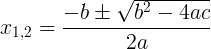
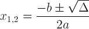

Quadratic equation is a second order polynomial with 3 coefficients - a, b, c.
The quadratic equation is given by:
ax2 + bx + c = 0
The solution to the quadratic equation is given by 2 numbers x1 and x2.
We can change the quadratic equation to the form of:
(x - x1)(x - x2) = 0
The solution to the quadratic equation is given by the quadratic formula:

The expression inside the square root is called discriminant and is denoted by Δ:
Δ = b2 - 4ac
The quadratic formula with discriminant notation:

This expression is important because it can tell us about the solution:
3x2+5x+2 = 0
a = 3, b = 5, c = 2
x1,2 = (-5 ± √(52 - 4×3×2)) / (2×3) = (-5 ± √(25-24)) / 6 = (-5 ± 1) / 6
x1 = (-5 + 1)/6 = -4/6 = -2/3
x2 = (-5 - 1)/6 = -6/6 = -1
3x2-6x+3 = 0
a = 3, b = -6, c = 3
x1,2 = (6 ± √( (-6)2 - 4×3×3)) / (2×3) = (6 ± √(36-36)) / 6 = (6 ± 0) / 6
x1 = x2 = 1
x2+2x+5 = 0
a = 1, b = 2, c = 5
x1,2 = (-2 ± √(22 - 4×1×5)) / (2×1) = (-2 ± √(4-20)) / 2 = (-2 ± √(-16)) / 2
There are no real solutions. The values are complex numbers:
x1 = -1 + 2i
x2 = -1 - 2i
The quadratic function is a second order polynomial function:
f(x) = ax2 + bx + c
The solutions to the quadratic equation are the roots of the quadratic function, that are the intersection points of the quadratic function graph with the x-axis, when
f(x) = 0
When there are 2 intersection points of the graph with the x-axis, there are 2 solutions to the quadratic equation.
When there is 1 intersection point of the graph with the x-axis, there is 1 solution to the quadratic equation.
When there are no intersection points of the graph with the x-axis, we get not real solutions (or 2 complex solutions).